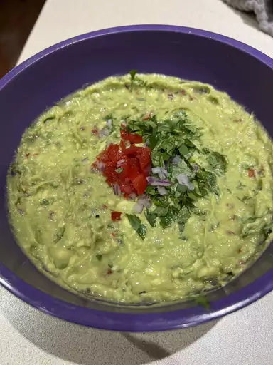

Guacamole

Description
This guacamole recipe gets a tasty kick from cayenne and cilantro. You can
serve it smooth or chunky depending on your tastes.
Ingredients
- Avocados
- Lime
- Salt
- Vegetables
-
Herbs and spices: Fresh cilantro, minced garlic, and cayenne pepper
Steps
-
Mash avocados, lime juice, and salt together in a medium bowl; mix in
tomatoes, onion, cilantro, and garlic. Stir in cayenne pepper.
-
Serve immediately, or cover and refrigerate for 1 hour for improved
flavor.